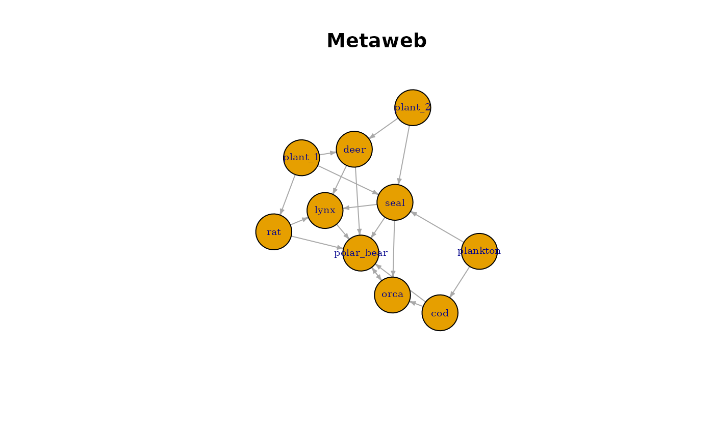

Introduction
A metaweb represents the set of all potential consumer–resource interactions in a system. In the context of paleoecology, the metaweb captures interactions that are trait-compatible, even if they may not all occur simultaneously in a realised community.
The PFWIM workflow allows users to infer these potential interactions from species trait data and categorical feeding rules.
This vignette demonstrates how to: * Infer a metaweb edgelist using infer_edgelist() * Convert the edgelist into an igraph network * Visualise the resulting food web
Inferring the Metaweb
The function infer_edgelist() evaluates trait
compatibility between species according to a set of categorical feeding
rules. It returns an edgelist, where each row represents a feasible
interaction.
metaweb_el <- infer_edgelist(
data = traits,
cat_combo_list = feeding_rules,
col_taxon = "species",
certainty_req = "all",
hide_printout = TRUE
)
head(metaweb_el)## # A tibble: 6 × 2
## taxon_resource taxon_consumer
## <chr> <chr>
## 1 cod orca
## 2 cod polar_bear
## 3 deer lynx
## 4 deer polar_bear
## 5 lynx lynx
## 6 lynx polar_bearTypical edgelists contain:
- consumer – the feeding species
- resource – the prey species
These edges define the structure of the potential food web.
Converting the Edgelist to an igraph Network
The edgelist can be directly converted into an igraph object, which allows users to compute network statistics and generate visualisations.
metaweb_graph <- graph_from_data_frame(
metaweb_el,
directed = TRUE
)
metaweb_graph## IGRAPH 7031125 DN-- 10 22 --
## + attr: name (v/c)
## + edges from 7031125 (vertex names):
## [1] cod ->orca cod ->polar_bear deer ->lynx
## [4] deer ->polar_bear lynx ->lynx lynx ->polar_bear
## [7] orca ->orca orca ->polar_bear plankton ->cod
## [10] plankton ->seal plant_1 ->deer plant_1 ->rat
## [13] plant_1 ->seal plant_2 ->deer plant_2 ->seal
## [16] polar_bear->orca polar_bear->polar_bear rat ->lynx
## [19] rat ->polar_bear seal ->lynx seal ->orca
## [22] seal ->polar_bearVisualising the Metaweb
Food webs are directed networks where edges flow from resource → consumer.
set.seed(66)
plot(
metaweb_graph,
vertex.size = 35,
vertex.label.cex = 0.6,
edge.arrow.size = 0.3,
layout = layout_with_fr(metaweb_graph),
main = "Metaweb"
)
This visualisation represents the potential trophic structure of the community based purely on trait compatibility.
Because all feasible interactions are included, metawebs are typically much denser than observed ecological networks.